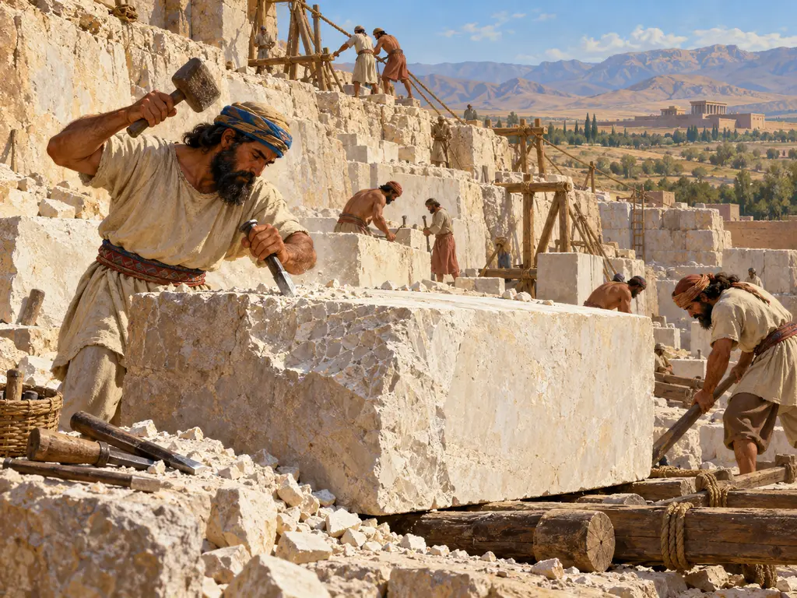
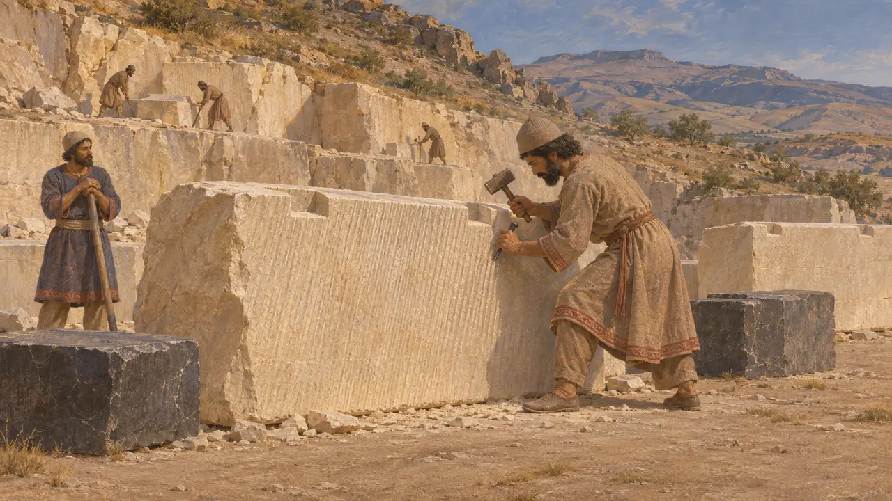
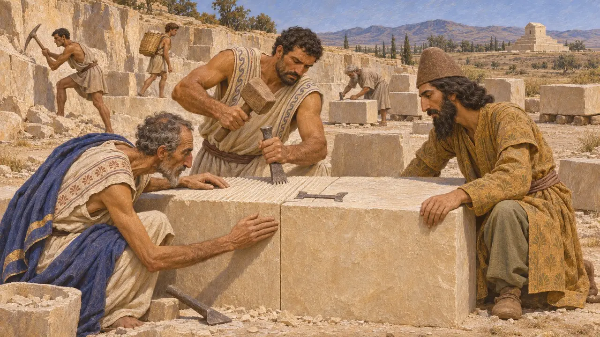
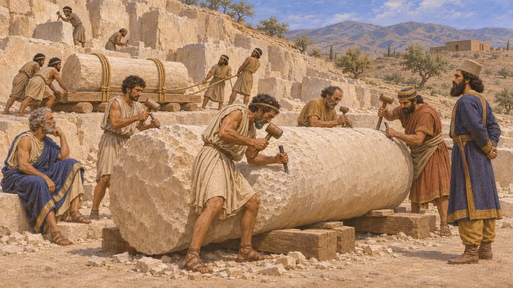
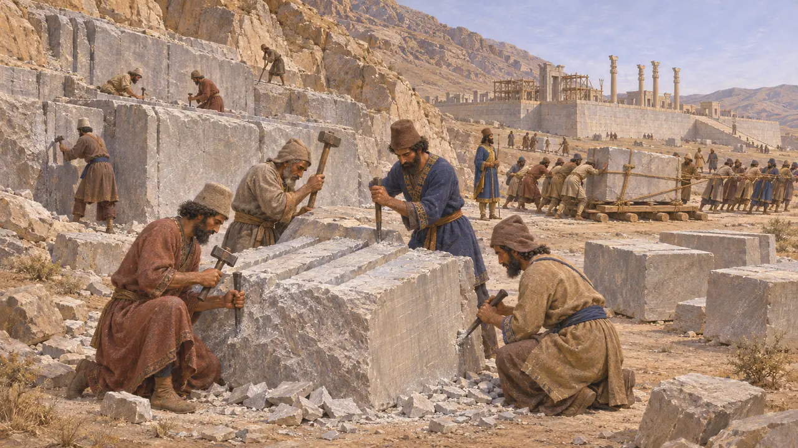
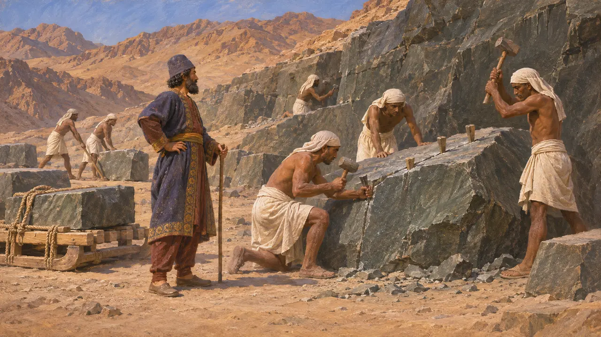

Limestone Quarry
Stone-cutting sites that supplied Achaemenid palaces and tombs, about 550-480 BCE
The great Persian building works at Pasargadae, Persepolis and Susa needed huge amounts of cut stone, much of it limestone taken from hills in the surrounding region. Quarrying drew on skilled masons from across the empire. Its traces, such as tool marks, unfinished blocks and abandoned quarry faces, still show how the King's builders worked.
In the game: The game's quarry cuts limestone blocks and must touch rocky hills, which fits real Achaemenid practice of cutting stone from hill outcrops. It simplifies history: real quarries could lie many kilometres from the building site.

Stone for the first Persian capital
In the recordThe buildings of Pasargadae, begun under Cyrus, were raised in finely dressed limestone. In some palaces pale stone was set beside dark stone for contrast. Investigators traced much of the pale limestone to quarries near Sivand, south-west of the site. The blocks still carry claw-chisel marks and sockets for metal clamps that once tied them together.
D. Stronach, Pasargadae, 1978

Who cut the stone at Pasargadae
DisputedThe techniques used at Pasargadae match Ionian and Lydian masonry of western Anatolia, including the toothed chisel, carefully fitted joints and swallowtail clamps. Cyrus conquered those lands in the 540s BCE, and many historians conclude that masons from there worked at Pasargadae. How many came, whether they were compelled or paid, and how much local skill was involved are still argued.
C. Nylander, Ionians in Pasargadae, 1970

Darius's charter at Susa
In the recordIn his foundation charter for the palace at Susa, Darius listed where his materials came from. He says the stone columns were brought from a village called Abiradush in Elam, and that the stonecutters who worked the stone were Ionians and Sardians. The text shows stone moving within a province and craftsmen moving across the empire.
DSf

Quarries at Persepolis
In the recordThe terrace at Persepolis was built against the foot of a mountain and faced with grey limestone cut from the surrounding hills, where quarry faces and half-finished blocks survive. The Persepolis Fortification tablets record rations paid to large groups of workers, including craftsmen. They show the scale of state-organised labour behind such projects.
E. F. Schmidt, Persepolis I, 1953; P. Briant, From Cyrus to Alexander, 2002

Quarrying in Persian Egypt
In the recordIn the Wadi Hammamat, in Egypt's Eastern Desert, hieroglyphic inscriptions left by a Persian official named Atiyawahy are dated to the reigns of Cambyses, Darius and Xerxes. They attest his visits to the old quarries there. The stone was a dark greywacke rather than limestone. The texts show that the Persian administration kept Egyptian quarrying going under its own officers.
G. Posener, La première domination perse en Égypte, 1936
Sources
- DSf
- D. Stronach, Pasargadae, 1978
- C. Nylander, Ionians in Pasargadae, 1970
- E. F. Schmidt, Persepolis I, 1953
- G. Posener, La première domination perse en Égypte, 1936
- P. Briant, From Cyrus to Alexander, 2002